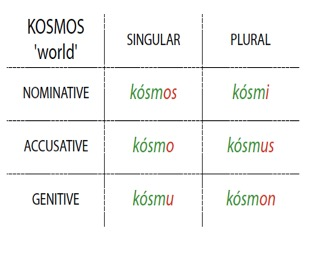
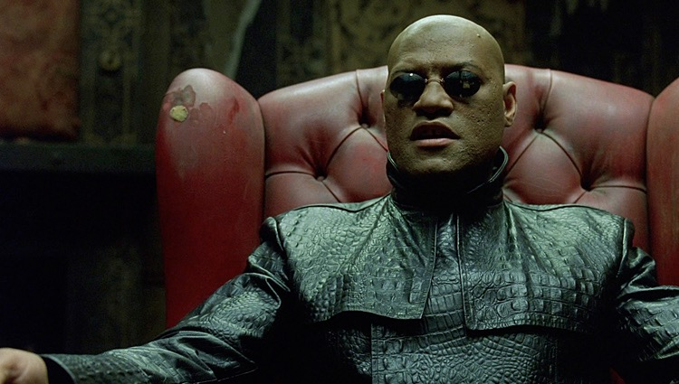

Did you hear about the guy who scammed a publisher by promising to write a dictionary of a language that doesn't exist? He was a lexi-con man! --- # The Morpheme-based Lexicon ### Dr. Will Styler - LIGN 120 --- ## Previously, on LIGN 120 <img class="wide" src="img/tiger.jpg"> --- ### How are words being accessed? <img class="small" src="morphology/sandwich_shop.jpg"> --- ### How are words being built? - "Let's see, I need to talk about gluing this thing, again, in the past. That's 'glue', plus 're-', and '-ed'." - "Let's see, I need to talk about gluing this thing, again, in the past. Looks like 'reglued' is the word I need!" --- ### Today, we'll look at one of the major approaches to the Lexicon - We'll think about what it means for word-building - What it means for theory - ... and what it means about storage - Then Monday, we'll go the other way! --- ### Today's Plan - Generative Linguistics - The Morpheme-based Lexicon - Problems with the Morpheme-based Lexicon --- # Generative Linguistics --- ## Generative Grammar --- ### We've talked a lot about generative morphology this quarter - "Your analysis should create all of the forms in the data, without predicting anything that isn't there" - "Productivity should detail all the possible forms, while preventing ones which aren't produced" - **These are generative approaches** --- ### Generative Grammar has a straightforward goal - Describe the structure of a language in a way that outlines rules for generating "all and only" the grammatical sentences of the language - "Let's create rules which generate everything that's attested in language" - "Let's build those rules such that they *do not* generate things that aren't attested" - The perfect generative grammar for Morphology can create every grammatical word, and forbid every ungrammatical one --- --- ### For Generative Grammar, good *description* is good *creation* - Grammar is taking known elements from an inventory and combining them by rule, then passing them on to the next level. - Known sub-elements are combined with rules, and then passed upwards... --- ### This is true at every level <img class="tall" src="img/linguistics_circles.jpg"> --- --- ### This leads to a view of language use as *assembly* - Take these pieces (phonemes, morphemes, lexemes) and put them together using rules - Formalize the patterns as abstract rules to generate (only) the correct forms - Phonological rules, Morphological Rules, Syntactic Rules - *Storage is kept to a minimum!* --- ### Welcome to the Sandwich Shop <img class="wide" src="morphology/sandwich_shop.jpg"> --- This perspective has big consequences for the storage of words! --- # The Morpheme-based Lexicon --- ### We've been making some key assumptions about storage - From 111: "We store phonemes, and then rules generate allophonic detail" - "You wouldn't want to put "cats" in the dictionary, when we could just add the -s online!" - "We don't need to create a whole new word, we can just combine "fuse" with "-ion", easy!" - **Computation is cheap, storage is expensive!!** --- ### Generative Grammar comes from a time when storage was expensive and computation was cheap <img class="wide" src="img/early_harddrive.jpg"> --- ### As an aside, [OMG](https://www.engadget.com/2019/02/25/1TB-microSD-cards-western-digital-micron/) <img class="wide" src="img/microsd.jpg"> --- ### In generative approaches, storage is a last resort - "Let's store just raw phonemes, and generate details with rules" - "Let's store bare lexemes, and generate inflected forms with rules" - **"We're not storing that in the lexicon unless we absolutely have to!"** --- ### Things that must be stored - Phonological Irregularity - e.g. English ablaut, 'exceptions' - Morphological Idiosyncrasy - e.g. Fossilized forms (oxen), Class information, Mice and Deer - Semantic Idiosyncrasy - e.g. Alienable vs. inalienable possession rules, animacy, and more - **We store only that which cannot be predicted by rules!** --- ### It makes for compact and graceful analysis - ... when it works well! --- ### It also feels more economical <img class="small" src="morphology/greekcase_2.jpg"> --- ### This has big consequences for the lexicon <img class="wide" src="morphology/lexicon_storage.jpg"> --- ### Phonemes are real and are the medium of storage - We're not storing acoustic signals - We're not storing post-phonological surface forms - We're storing words as a series of **phonemes** --- <img class="tall" src="phonology/drake_phonemes.jpg"> --- ### We're storing as little information as we can - Monomorphemic words - e.g. "cat", "suit", "ice", "Germany" - Idiosyncratic Forms - e.g. "oxen", "mice", "was", "best", "backpack" - Affixes and Productive Morphological Processes - e.g. -s, -tion, -ify, re-, un- --- ### Forms are stored with meanings --- ## '-ed' <img class="wide" src="diagrams/tense_nonpast.png"> --- ## 'cat' <img class="tall" src="img/lilbub.jpg"> --- ## '-s' <img class="tall" src="img/bearsrepeating.jpg"> --- ### ... and rules tell us how to combine them <img class="wide" src="diagrams/split_morphology_redirected.jpg"> --- ### So, in summary... --- ### In a morpheme-based lexicon... - Words are stored as sequences of phonemes - Stems and affixes are stored as unanalyzable chunks with meanings - Storage is viewed as precious, and an effort is made to avoid doing it - We combine these based on rules to generate the non-stored words - Then we do phonology on the output to create legal surface forms - All of the above is done according to abstract rules generating all and only the possible forms --- # Problems with a Morpheme-based Lexicon --- (There are many morpheme-based theories, some of which may have different assumptions. We're talking generally!) --- ### This works *very* well if you have transparent affixation - "cat" 'cat' is stored, -s 'PL' is stored, so combine them for 'cat.PL' - "walk" 'walk' is stored, -ed 'PAST' is stored, so combine them for 'walk.PAST' - ... but we know it isn't always like that --- ## Efficiency Losses --- ### Efficiency depends on regularity <img class="small" src="morphology/greekcase_2.jpg"> --- ### ... but irregularity is regular <img class="wide" src="morphology/spanish_irparadigm_top.jpg"> --- ### ... but irregularity is regular <img class="wide" src="morphology/spanish_irparadigm_bottom.jpg"> --- ### As regularity is reduced, the efficiency is reduced - Suppletive allomorphy must be stored - 'Better' cannot be derived from 'Good' + '+er' - 'went' must be stored independently of 'go' and '-ed' - The more mice, oxen, deer, and women you have, the more you're storing - ... but this isn't a big issue, just more storage! --- ## Difficulty Predicting Derived Meanings --- ### Morpheme-based approaches thrive on predictability - X + Y should transparently mean "X+Y" - Bottler, Painter, Bridger, Plasterer, Lecturer, Influencer - We can understand these words by knowing the meaning of X + the meaning of -er - **These don't need to be stored!** - (Note, we're here erasing the inflection/derivation difference!) --- ### Sometimes, we don't have both components - Fletcher, Cobbler, Haberdasher, Butcher, Bursar - We don't have the meaning of X, so they're functionally monomorphemic - **These must be stored separately!** --- ### Sometimes, the meaning is different from the combination - Hooker, Grinder, Hustler, Professor, Player, Mailer - Here, there's meaning which is *not predictable* based on the known components - **We must separately store the meanings of these words** --- ... but the biggest issue is ... --- ## Non-concatenative morphology --- ### Review: Common non-concatenative ways of adding meaning to words - Zero Expressions - e.g. I sing-ø - Conversion - e.g. re'peat (V) -> 'repeat (N), or ticket (N,V) - Stem Modification - e.g. changing tones, vowels, consonants, orderings - Reduplication --- ### How are we storing zero morphemes? - Do we have a whole bunch of meanings stored under '-ø'? --- ### How do we handle multiple exponence? - Do we write optional rules? - Do we store morphemes with multiple forms? --- ### How are we storing this? --- ### What about this? <img class="wide" src="morphology/warlpiri_redup.jpg"> --- ### How about English ablaut? - sit -> sat/seated, sing -> sang/sung, sting -> stung/stung, yeet -> yote/yaughten - [List of English Irregular Verbs](https://en.wikipedia.org/Wiki/List_of_English_irregular_verbs) --- ### There are approaches to handling these phenomena! - We could store *the pattern itself* as a lexical entry - Morphemes are stored alongside stem modifications (etc.) - Morphological processes are stored as entries, and combined with stems - ... but this quickly erases the 'elegance' of the approach --- ### Morpheme-based approaches grow less compelling with increased irregularity - Exceptions have to get stored somehow - You end up with a bunch of edge cases --- ### Generative linguistics is like picking up broken glass in carpet - Disposing of the big chunks is easy and effective - You're gonna spend a long time chasing down those last slivers - ... and you're still gonna need some tweezers from time to time --- ## So, that's a morpheme-based approach --- ## But there is another way  --- ### Wrapping Up - Generative approaches to grammar create all and only the attested forms - Morpheme-based lexicons are great for efficiently handling regular patterns - They struggle with irregularity and hard-to-memorize forms --- ### For Next Time - Read the Bybee paper - We'll talk about whole-word storage as an alternative --- <huge>Thank you!</huge>